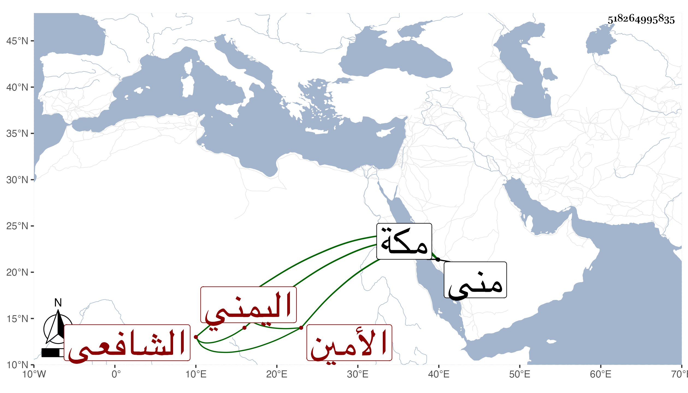

0902Sakhawi.DawLamic.ITO20230111-ara1.EIS1600.518264995835
Biography ID: 518264995835
951
إسماعيل بن محمد بن الأمين بن علي بن الأمين بن عبد الملك بن الأمين ابن هارون بن يحيى بن فضل الأمين المليكي اليمني الشافعي نزيل مكة ويعرف بالأمين . سمع على شيخنا في سنة أربع وعشرين وثمانمائة بمنى المتباينات وتخريج أربعي النووي وغيرهما من تصانيفه وكذا سمع على ابن الجزري بل أجاز له في سنة ثلاث وعشرين جماعة وحصل وكتب بخطه مجاميع مفيدة .
